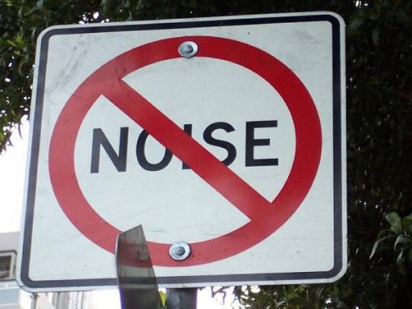
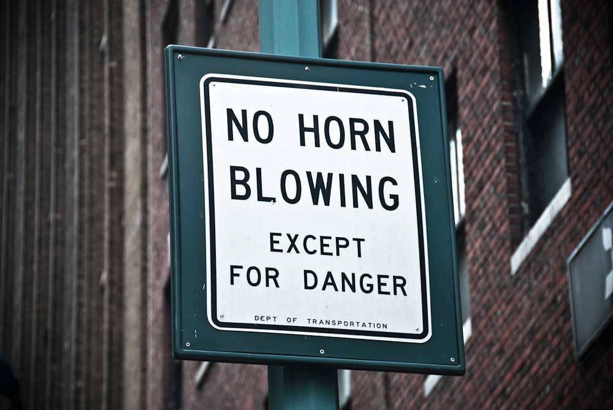

What is Sound Pollution?
Sound Pollution is the propagation of noise with harmful impact on the activity of human or
animal life. The source of outdoor noise worldwide is mainly caused by machines, transport and transportation
systems.Poor urban planning may give rise to noise pollution, side-by-side industrial and residential
buildings can result in noise pollution in the residential areas. Some of the main sources of noise in
residential areas include loud music, transportation noise, lawn care maintenance, nearby construction, or
young people yelling (sports games). Noise pollution associated with household electricity generators is an
emerging environmental degradation in many developing nations. The average noise level of 97.60 dB obtained
exceeded the WHO value of 50 dB allowed for residential areas.Research suggests that noise pollution is
the highest in low-income and racial minority neighborhoods.
Sources of Sound Pollution
1. Industrialization:Most of the industries
use big machines which are capable of producing large amount of noise. Apart from that, various equipments like
compressors, generators, exhaust fans, grinding mills also participate in producing big noise. Therefore, you must
have seen workers in these factories and industries wearing ear plugs to minimize the effect of noise.
2. Social Events:Noise is at its peak in most of the
social events. Whether it is marriage, parties, pub, disc or place of worship, people normally flout rules set by the local
administration and create nuisance in the area. People play songs on full volume and dance till midnight which makes the
condition of people living nearby pretty worse.
3. Transportation:Large number of vehicles on roads,
aeroplanes flying over houses, underground trains produce heavy noise and people get it difficult to get accustomed to that.
The high noise leads to a situation wherein a normal person lose the ability to hear properly.
4. Construction Activities:Under construction activities
like mining, construction of bridges, dams, buildings, stations, roads, flyovers take place in almost every part of the world.
These construction activities take place everyday as we need more buildings, bridges to accommodate more people and to reduce
traffic congestion. The down point is that these construction equipments are too noisy.
5. Household Chores:We people are surrounded by gadgets
and use them extensively in our daily life. Gadgets like TV, mobile , mixer grinder, pressure cooker, vacuum cleaners , washing
machine and dryer, cooler, air conditioners are minor contributors to the amount of noise that is produced but it affects the
quality of life of your neighborhood in a bad way.
Effects of Sound Pollution
High noise levels can contribute to cardiovascular effects in humans and an
increased incidence of coronary artery disease.In animals, noise can increase the risk of death by
altering predator or prey detection and avoidance, interfere with reproduction and navigation, and contribute
to permanent hearing loss.While the elderly may have cardiac problems due to noise, according to the World
Health Organization, children are especially vulnerable to noise, and the effects that noise has on children
may be permanent.Noise poses a serious threat to a child’s physical and psychological health, and may
negatively interfere with a child's learning and behavior,such as thinking screams or yelling are acceptable
for any library, courtroom, church or classical music.Therefore the effects of sound pollution are:
- Hearing Problems
- Health Issues
- Sleeping Disorders
- Cardiovascular Issues
- Trouble Communicating
- Effect on Wildlife, etc.
Easy and Practical Ways to Reduce Sound Pollution
The easy & practical ways to reduce sound pollution are 1. Close the windows,2. Put in earplugs,3. Improve your
insulation,4. Intsall a fence,5. Invest in noice friendly flooring,6. Use of morden acoustic Wall panels
,7. Turn of the electrical or reduce the volume,8. Plant trees, etc.The Hierarchy of Controls concept is often used to reduce noise in the environment or the workplace. Engineering
noise controls can be used to reduce noise propagation and protect individuals from overexposure. When noise controls
are not feasible or adequate, individuals can also take steps to protect themselves from the harmful effects of noise
pollution. If people must be around loud sounds, they can protect their ears with hearing protection
(e.g., ear plugs or ear muffs).In recent years, Buy Quiet programs and initiatives have arisen in an effort to
combat occupational noise exposures. These programs promote the purchase of quieter tools and equipment and encourage
manufacturers to design quieter equipment. |



|